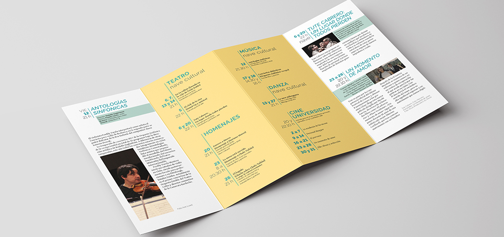
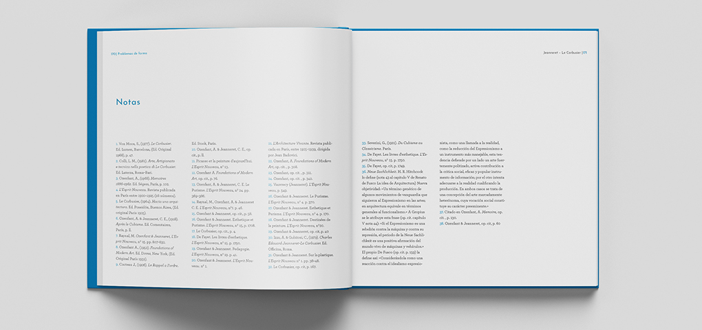
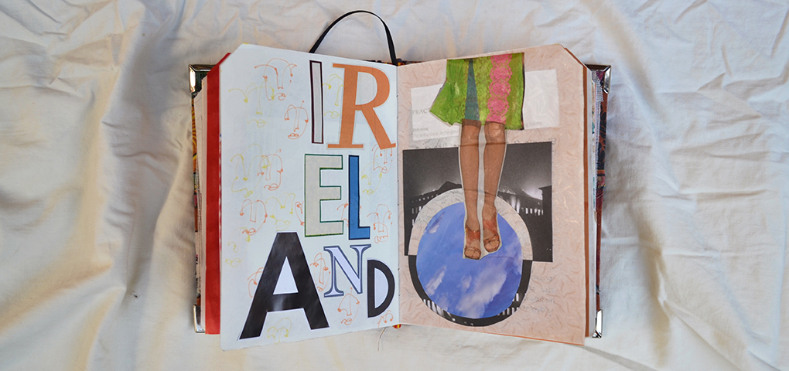
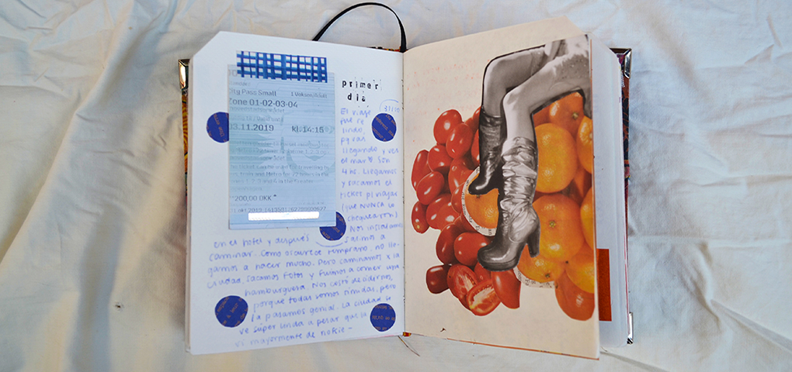
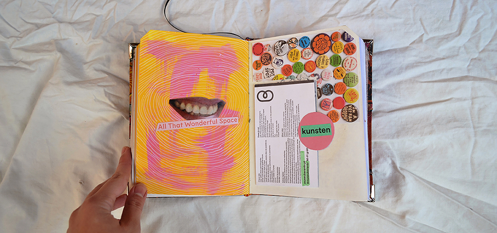
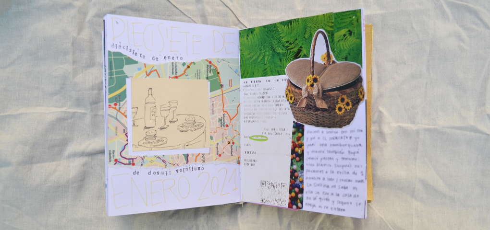

<!DOCTYPE html>
<html lang="en">
<head>
	<meta charset="UTF-8">
	<meta name="viewport" content="width=device-width, initial-scale=1.0">
	<title>Portfolio | Martina Domesi</title>
	<link rel="icon" href="imagenes/logoSimplif.svg">

	<meta name="description" content="Organización de trabajos de diseño gráfico para presentar a futuros clientes">
	<meta name="keywords" content="diseño grafico, creatividad, portfolio, universidad de diseo, collage, freelancing" >
    <!-- Bootstrap CSS -->
    
    <link href="https://cdn.jsdelivr.net/npm/bootstrap@5.0.0/dist/css/bootstrap.min.css" rel="stylesheet" integrity="sha384-wEmeIV1mKuiNpC+IOBjI7aAzPcEZeedi5yW5f2yOq55WWLwNGmvvx4Um1vskeMj0" crossorigin="anonymous">
    <link rel="stylesheet" type="text/css" href="main.css">
</head>
</html>		
<body>
	<header>
		<div>
			<div class="row">
				<nav class="col-md-12 navbar">
				  <div class="container-fluid">
				    <a class="navbar-brand" href="index.html">
				      
				    </a>
				    <ul class="nav justify-content-end">
					  <li class="hvr-float">
					    <a class="nav-link active" aria-current="page" href="sobreMi.html">Sobre mí</a>
					  </li>
					  <li class="hvr-float">
					    <a class="nav-link" href="galeria.html">Galería</a>
					    <ul>
							<li><a href="galeria.html"> Fotografía </a></li>
							<li><a href="galeria.html"> Caligrafía </a></li>
							<li><a href="galeria.html"> Trabajos Creativos </a></li>
						</ul>
					  </li>
					  <li class="nav-item">
					    <a class="nav-link" href="contacto.html">Contacto</a>
					</ul>
				  </div>
				</nav>
			</div>
		</div>
	</header>
	<main>
		<div class="container-fluid">
			<div class="row">
				<section class="col-md-8">
				<h1>Martina Domesi</h1>									
				<h2>mi portfolio</h2>
				<p> El portfolio, como herramienta estratégica dentro del mundo de la comunicación y creatividad, funciona para identificar los
				requerimientos del ámbito laboral seleccionado y la capacidad creativa. Por eso, tener un panorama de los diversos campos en la
				disciplina es indispensable para el acercamiento donde se toman en cuenta las diferentes oportunidades que se pueden abrir y lo que
				el mercado busca en el profesional.
				</p>
				<p>Un portfolio profesional es la muestra de trabajos combinados y realizados personalmente que surgen como resultado del proceso
				de selección, reflexión y generación de las piezas. Funciona como una herramienta para la búsqueda laboral siempre y cuando se
				tengan clara la aplicación y el mercado al que se quiere participar. Dicha pieza depende del ámbito al que apunta y la
				presentación física del mismo, pero siempre apuntando a comunicar las mejores aptitudes y confianza de una manera coherente,
				sintética y clara.</p>
				<p>En la actualidad, los profesionales del ámbito laboral con años de experiencia están en la búsqueda de nuevos talentos con
				entusiasmo, pasión y una buena carpeta que los represente. He allí la importancia de apuntar a un mercado específico al diseñar el
				portfolio. Ya que no son las mismas necesidades en una agencia, un estudio de diseño, una productora o en freelancing. Hoy en día,
				desear un puesto de trabajo ya no es suficiente para la
				competencia que existe, al contrario, se necesita demostrar la
				efectividad, el talento y las habilidades personales. </p>
				</section>
				<section class="col-md-3 container-fluid">
					<aside>
						<p class="right">"La idea no es vivir algo para siempre: es crear algo que sí lo haga" 
					Andy Warhol </p>
					</aside>
				</section>
			</div>	
		</div>
		<div class="container-fluid">
			<div class="row">
			<section class="col-md-12">
				<h2>trabajos</h2> 
					<h3 class="hvr-underline-from-left">Trabajos Universitarios</h3>
						<article class="containerFotos col-md-12">
						<div id="carouselExampleIndicators" class="carousel slide" data-bs-ride="carousel">
						  <div class="carousel-indicators">
						    <button type="button" data-bs-target="#carouselExampleIndicators" data-bs-slide-to="0" class="active" aria-current="true" aria-label="Slide 1"></button>
						    <button type="button" data-bs-target="#carouselExampleIndicators" data-bs-slide-to="1" aria-label="Slide 2"></button>
						    <button type="button" data-bs-target="#carouselExampleIndicators" data-bs-slide-to="2" aria-label="Slide 3"></button>
						    <button type="button" data-bs-target="#carouselExampleIndicators" data-bs-slide-to="3" aria-label="Slide 4"></button>
						  </div>
						  <div class="carousel-inner">
						    <div class="carousel-item active">
						      
						    </div>
						    <div class="carousel-item">
						      
						    </div>
						    <div class="carousel-item">
						      
						    </div>
						  </div>
						  <button class="carousel-control-prev" type="button" data-bs-target="#carouselExampleIndicators" data-bs-slide="prev">
						    <span class="carousel-control-prev-icon" aria-hidden="true"></span>
						    <span class="visually-hidden">Previous</span>
						  </button>
						  <button class="carousel-control-next" type="button" data-bs-target="#carouselExampleIndicators" data-bs-slide="next">
						    <span class="carousel-control-next-icon" aria-hidden="true"></span>
						    <span class="visually-hidden">Next</span>
						  </button>
						</div>
						</article>
					<h3 class="hvr-underline-from-left">Otros Trabajos</h3>
						<article class="containerFotos col-md-12">
						<div id="carouselExampleIndicators" class="carousel slide" data-bs-ride="carousel">
						  <div class="carousel-indicators">
						    <button type="button" data-bs-target="#carouselExampleIndicators" data-bs-slide-to="0" class="active" aria-current="true" aria-label="Slide 1"></button>
						    <button type="button" data-bs-target="#carouselExampleIndicators" data-bs-slide-to="1" aria-label="Slide 2"></button>
						    <button type="button" data-bs-target="#carouselExampleIndicators" data-bs-slide-to="2" aria-label="Slide 3"></button>
						    <button type="button" data-bs-target="#carouselExampleIndicators" data-bs-slide-to="3" aria-label="Slide 4"></button>
						  </div>
						  <div class="carousel-inner">
						    <div class="carousel-item active">
						      
						    </div>
						    <div class="carousel-item">
						      
						    </div>
						    <div class="carousel-item">
						      
						    </div>
						    <div class="carousel-item">
						      
						    </div>
						  </div>
						  <button class="carousel-control-prev" type="button" data-bs-target="#carouselExampleIndicators" data-bs-slide="prev">
						    <span class="carousel-control-prev-icon" aria-hidden="true"></span>
						    <span class="visually-hidden">Previous</span>
						  </button>
						  <button class="carousel-control-next" type="button" data-bs-target="#carouselExampleIndicators" data-bs-slide="next">
						    <span class="carousel-control-next-icon" aria-hidden="true"></span>
						    <span class="visually-hidden">Next</span>
						  </button>
						</div>
						</article>
			</section>
			</div>
		</div>	
	</main>
	<footer>
		<div class="container-fluid">
			<div class="row">
				<section class="col-md-12">
					<p>martinadomesi@gmail.com</p>
					<p><a href="https://www.facebook.com/mardomesi/">Facebook</a></p>
					<p><a href="https://www.instagram.com/mardomesi/?hl=es-la">Instagram</a></p>
				</section>
			</div>
		</div>
	</footer>	
    <script src="https://cdn.jsdelivr.net/npm/bootstrap@5.0.0/dist/js/bootstrap.bundle.min.js" integrity="sha384-p34f1UUtsS3wqzfto5wAAmdvj+osOnFyQFpp4Ua3gs/ZVWx6oOypYoCJhGGScy+8" crossorigin="anonymous"></script>
</body>
</html>